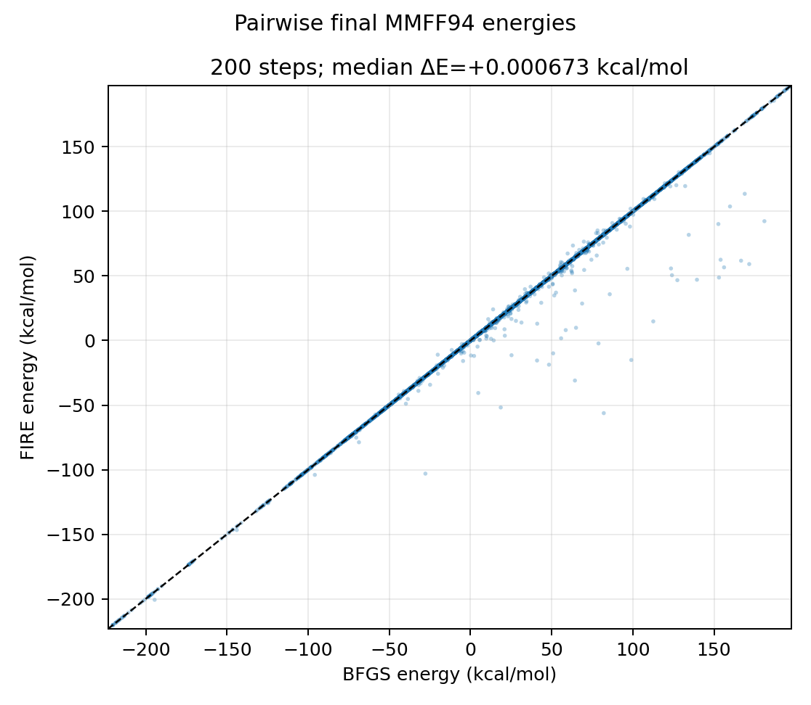
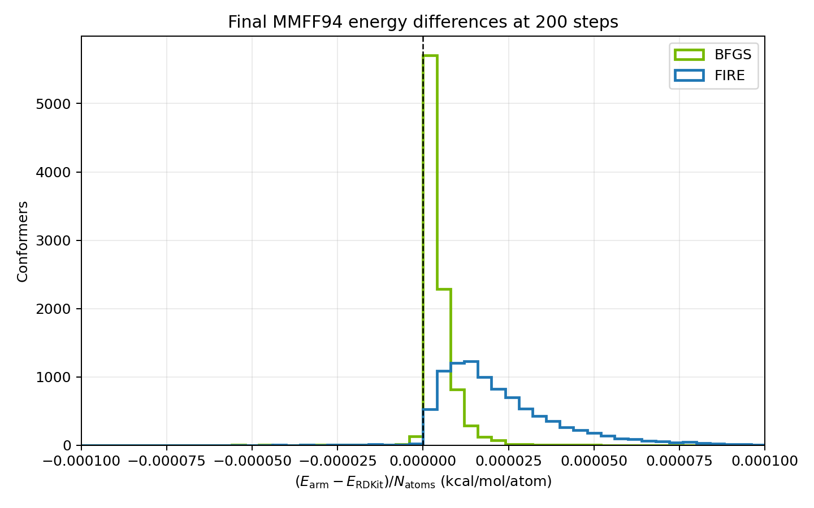

FIRE minimizer#
nvMolKit provides the Fast Inertial Relaxation Engine (FIRE) as an alternative to BFGS for MMFF94 and UFF geometry optimization.
The implementation follows the FIRE 2.0 update scheme. See the original FIRE paper, and the FIRE 2.0 paper
Using FIRE#
Select FIRE with minimizerKind="FIRE". BFGS remains the default.
The return value and in-place coordinate updates are the same for both
minimizers.
from rdkit import Chem
from rdkit.Chem.rdDistGeom import ETKDGv3
from nvmolkit.embedMolecules import EmbedMolecules
from nvmolkit.mmffOptimization import MMFFOptimizeMoleculesConfs
from nvmolkit.types import FireOptions
smiles = ["CCO", "c1ccccc1O", "CC(=O)NC1=CC=C(C=C1)O"]
mols = [Chem.AddHs(Chem.MolFromSmiles(smiles)) for smiles in smiles]
params = ETKDGv3()
params.useRandomCoords = True
EmbedMolecules(mols, params, confsPerMolecule=10)
options = FireOptions()
options.gradTol = 1e-4
energies = MMFFOptimizeMoleculesConfs(
mols,
maxIters=200,
minimizerKind="FIRE",
fireOptions=options,
)
# energies[i][j] is the final energy of conformer j of molecule i.
UFF uses the same FIRE options:
from nvmolkit.uffOptimization import UFFOptimizeMoleculesConfs
energies = UFFOptimizeMoleculesConfs(
mols,
maxIters=400,
minimizerKind="FIRE",
fireOptions=options,
)
The batched-forcefield interfaces also accept minimizerKind="FIRE" and
fireOptions=options in their minimize methods.
A conformer is converged when the 2-norm of its full gradient is no greater
than gradTol. Independent conformers are batched on the GPU; the adaptive
state and the convergence decision remain per conformer.
Performance#
At an equal iteration count, FIRE is roughly 2x faster than BFGS on all tested hardware.
Parameters and tuning#
The default values in nvmolkit.types.FireOptions were selected with
an Optuna study at a fixed budget of 200 iterations.
Defaults were tuned on MMFF94, but were independently verified to be valid for UFF optimization and distance-geometry embedding.
Validation#
We validated FIRE on 10,000 noise-perturbed MMFF94 conformers sampled from the Enamine REAL 10M collection. RDKit MMFF94, nvMolKit BFGS, and nvMolKit FIRE all started from the same coordinates and ran for 200 steps. Every final geometry was re-scored with RDKit MMFF94 so all energy comparisons use one implementation.
Comparing FIRE against BFGS from identical starting conformers, nearly all pairs sit on the parity line. Most of the conformers that fall off the diagonal are in FIRE’s favor: they lie below the parity line, meaning FIRE found the lower-energy minimum from that starting geometry.
{kind=link}

Pairwise BFGS/FIRE final energies from identical starting conformers. Points below the diagonal are conformers where FIRE reached the lower energy.#
Against RDKit as the reference, 93% of FIRE conformers finish within \(10^{-4}\) kcal/mol/atom of the RDKit energy, compared with 96% for BFGS. Within that bulk, FIRE sits slightly farther from RDKit: its median offset is \(+1.7\times10^{-5}\) kcal/mol/atom against \(+3.0\times10^{-6}\) for BFGS.
{kind=link}

Final-energy difference distributions at 200 steps, shown over \(\pm 10^{-4}\) kcal/mol/atom.#
Taken together, at an equal iteration budget, FIRE’s bulk distribution is slightly looser than BFGS’s, while FIRE reaches the lower minimum on most of the conformers where the two minimizers end up in different basins.